# This Python 3 environment comes with many helpful analytics libraries installed
# It is defined by the kaggle/python Docker image: https://github.com/kaggle/docker-python
# For example, here's several helpful packages to load
import numpy as np # linear algebra
import pandas as pd # data processing, CSV file I/O (e.g. pd.read_csv)
# Input data files are available in the read-only "../input/" directory
# For example, running this (by clicking run or pressing Shift+Enter) will list all files under the input directory
import os
for dirname, _, filenames in os.walk('/kaggle/input'):
for filename in filenames:
print(os.path.join(dirname, filename))
# You can write up to 20GB to the current directory (/kaggle/working/) that gets preserved as output when you create a version using "Save & Run All"
# You can also write temporary files to /kaggle/temp/, but they won't be saved outside of the current sessionBlog 3 – Classification
Implementation of Isolation Forest to Detect Outliers in Python (Scikit-learn)
Diabetes and Pima Indian Dataset
Machine learning has become an important approach to many researches today. It is a field of artificial intelligence and its importance is increasing day by day.
In this project, a classification model will be made using the Pima Indians Diabetes data set. Diabetes is a group of metabolic disorders in which long-term high blood sugar levels are seen. High blood sugar symptoms include frequent urination, increased thirst, and increased hunger. If left untreated, diabetes can cause many complications. Acute complications may include diabetic ketoacidosis, hyperosmolar hyperglycemic state, or death. Serious long-term complications include cardiovascular disease, stroke, chronic kidney disease, foot ulcer, and eye damage.
This dataset was originally from the National Institute of Diabetes and Digestive and Kidney Diseases. The purpose of the dataset is to diagnostically predict whether a patient has diabetes based on the specific diagnostic measures included in the data set. Various restrictions have been imposed on the selection of these samples from a larger database.
In particular, all the patients here are women who are at least 21 years old of Pima Indian heritage. The data set consists of 768 observation units and 9 variables. These variables are; pregnancy, glucose, blood pressure, skin thickness, insulin, body mass index, diabetes pedigree, age and outcome. After the exploratory data analysis on the data set is completed, the machine learning model will be set up. For this, supervised learning algorithms will be used.
Importing Libraries
import numpy as np
import pandas as pd
import seaborn as sns
import matplotlib.pyplot as plt
from sklearn.neighbors import LocalOutlierFactor, KNeighborsClassifier
import plotly.graph_objs as go
import plotly.offline as py
from sklearn.preprocessing import StandardScaler, RobustScaler
from sklearn.model_selection import train_test_split, GridSearchCV, cross_val_score, RandomizedSearchCV, RepeatedStratifiedKFold
from sklearn.linear_model import LogisticRegression, SGDClassifier
from sklearn.metrics import confusion_matrix, accuracy_score, roc_curve, roc_auc_score, recall_score, f1_score
from sklearn.tree import DecisionTreeClassifier
from lightgbm import LGBMClassifier
from sklearn.pipeline import make_pipeline
from sklearn.ensemble import RandomForestClassifier
import missingno as msno
import warnings
warnings.filterwarnings("ignore")Reading Data
diabetes = pd.read_csv("diabetes.csv")
df = diabetes.copy()
df.head()| Pregnancies | Glucose | BloodPressure | SkinThickness | Insulin | BMI | DiabetesPedigreeFunction | Age | Outcome | |
|---|---|---|---|---|---|---|---|---|---|
| 0 | 6 | 148 | 72 | 35 | 0 | 33.6 | 0.627 | 50 | 1 |
| 1 | 1 | 85 | 66 | 29 | 0 | 26.6 | 0.351 | 31 | 0 |
| 2 | 8 | 183 | 64 | 0 | 0 | 23.3 | 0.672 | 32 | 1 |
| 3 | 1 | 89 | 66 | 23 | 94 | 28.1 | 0.167 | 21 | 0 |
| 4 | 0 | 137 | 40 | 35 | 168 | 43.1 | 2.288 | 33 | 1 |
df.describe().T| count | mean | std | min | 25% | 50% | 75% | max | |
|---|---|---|---|---|---|---|---|---|
| Pregnancies | 768.0 | 3.845052 | 3.369578 | 0.000 | 1.00000 | 3.0000 | 6.00000 | 17.00 |
| Glucose | 768.0 | 120.894531 | 31.972618 | 0.000 | 99.00000 | 117.0000 | 140.25000 | 199.00 |
| BloodPressure | 768.0 | 69.105469 | 19.355807 | 0.000 | 62.00000 | 72.0000 | 80.00000 | 122.00 |
| SkinThickness | 768.0 | 20.536458 | 15.952218 | 0.000 | 0.00000 | 23.0000 | 32.00000 | 99.00 |
| Insulin | 768.0 | 79.799479 | 115.244002 | 0.000 | 0.00000 | 30.5000 | 127.25000 | 846.00 |
| BMI | 768.0 | 31.992578 | 7.884160 | 0.000 | 27.30000 | 32.0000 | 36.60000 | 67.10 |
| DiabetesPedigreeFunction | 768.0 | 0.471876 | 0.331329 | 0.078 | 0.24375 | 0.3725 | 0.62625 | 2.42 |
| Age | 768.0 | 33.240885 | 11.760232 | 21.000 | 24.00000 | 29.0000 | 41.00000 | 81.00 |
| Outcome | 768.0 | 0.348958 | 0.476951 | 0.000 | 0.00000 | 0.0000 | 1.00000 | 1.00 |
In this dataset missing data are filled with 0. First, we are gonna change zeros with NaN
df[['Glucose','BloodPressure','SkinThickness','Insulin','BMI']] = df[['Glucose','BloodPressure','SkinThickness',
'Insulin','BMI']].replace(0, np.NaN)Data Visualization
Histogram
A histogram is a bar graph representation of a grouped data distribution. In other words, it is the transfer of data consisting of repetitive numbers to the table first, and to the chart by using the table, in other words, the graph of the data groups is displayed in rectangular columns.
df.hist(bins=20,figsize = (15,15));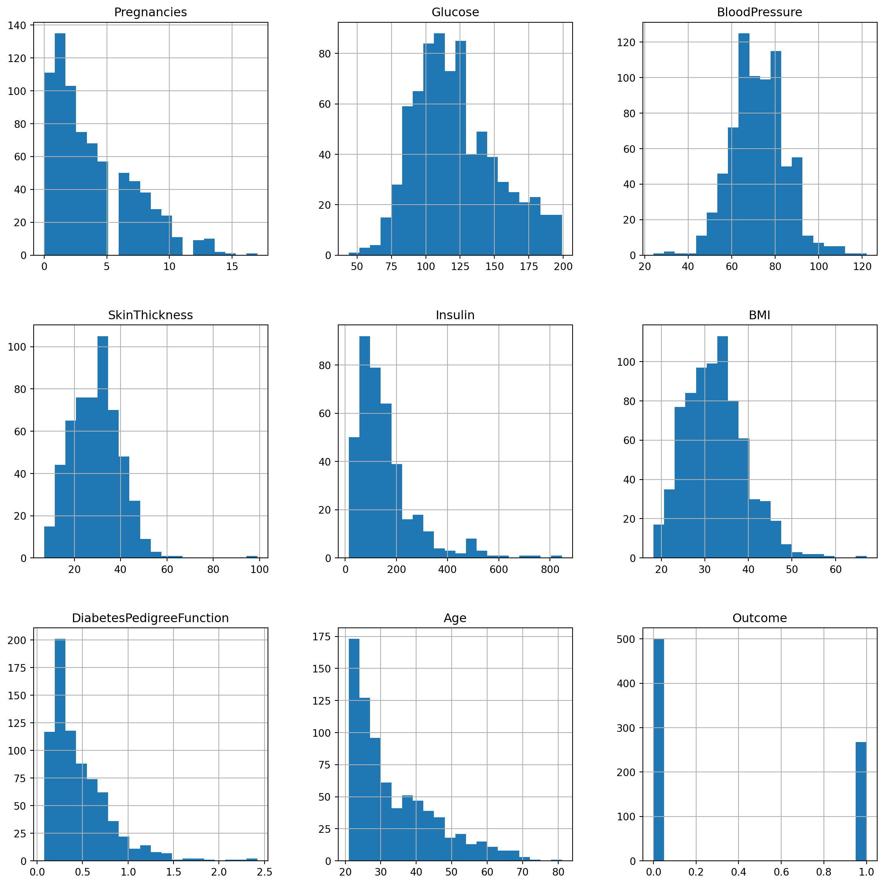
Countplot and PiePlot
A count plot can be thought of as a histogram across a categorical, instead of quantitative, variable. A Pie Chart is a type of graph that displays data in a circular graph. The pieces of the graph are proportional to the fraction of the whole in each category.
We examined distribution of outcome with countplot and pieplot.
plt.title("Distribution of Outcome")
sns.countplot(df["Outcome"], saturation=1)<Axes: title={'center': 'Distribution of Outcome'}, ylabel='count'>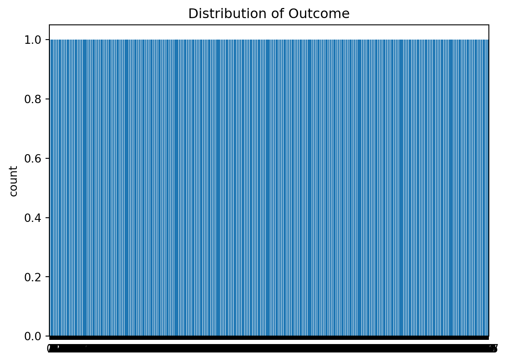
def PlotPie(df, nameOfFeature):
labels = [str(df[nameOfFeature].unique()[i]) for i in range(df[nameOfFeature].nunique())]
values = [df[nameOfFeature].value_counts()[i] for i in range(df[nameOfFeature].nunique())]
trace=go.Pie(labels=labels,values=values)
py.iplot([trace])
PlotPie(df, "Outcome")Correlation
Correlation is a term that is a measure of the strength of a linear relationship between two quantitative variables.
In this graph, there are correlations of all variables with the Outcome variable.
def corr_to_target(dataframe, target, title=None, file=None):
plt.figure(figsize=(4,6))
sns.heatmap(dataframe.corr()[[target]].sort_values(target,
ascending=False)[1:],
annot=True,
cmap='coolwarm')
plt.title(f'\n{title}\n', fontsize=18)
plt.show();
return
corr_to_target(df, "Outcome", title="Outcome")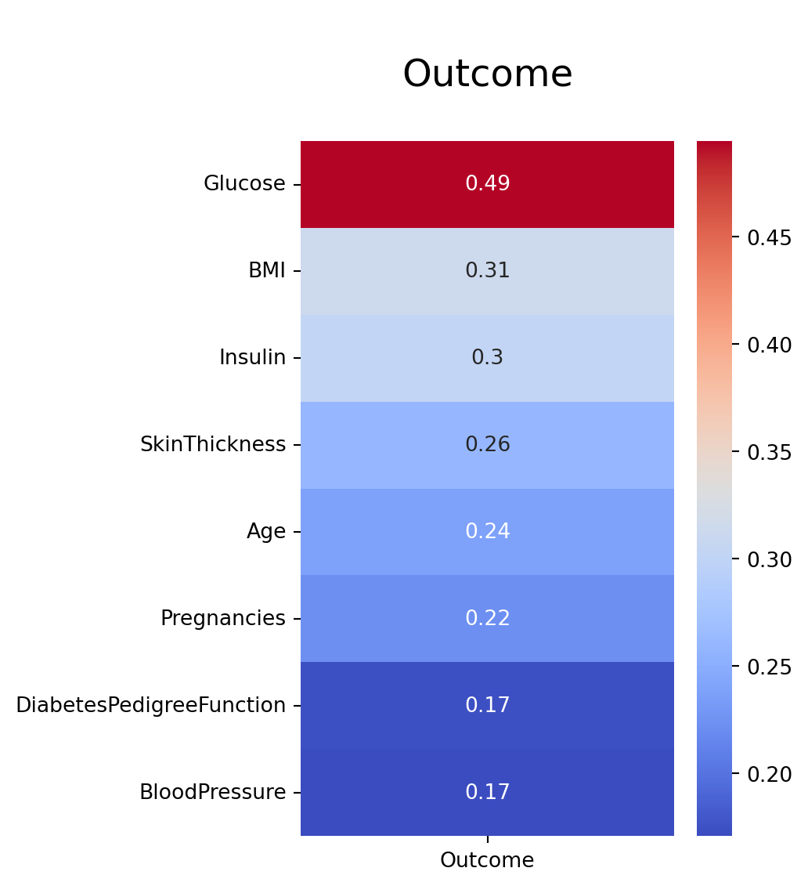
Correlation matrix of variables with each other.
corr_matrix = df.corr()
sns.clustermap(corr_matrix, annot=True, fmt=".2f")
plt.title("Correlation Between Features")Text(0.5, 1.0, 'Correlation Between Features')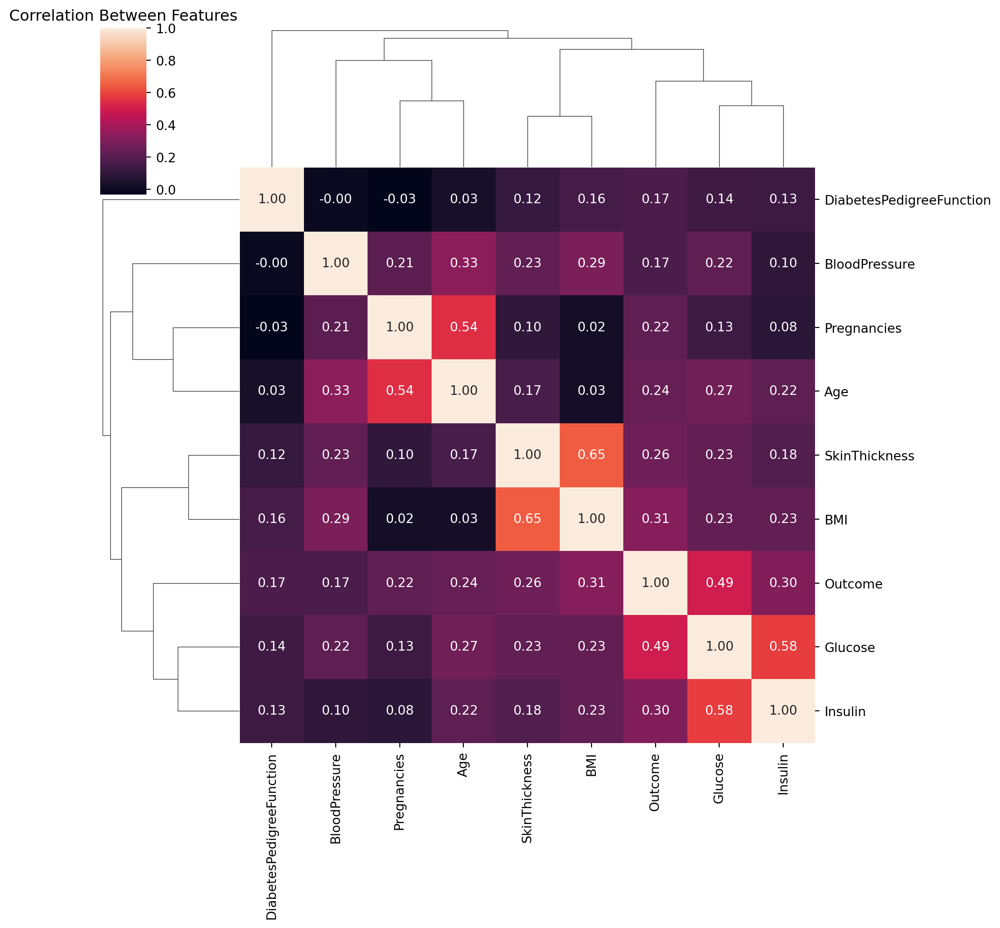
Splitting Train and Test Set
Above, we first gave all variables except the “outcome” variable to the X variable and gave the variable “outcome” to the y variable. Then we split the data into train and test data. X_train and y_train show the dependent and independent variables to be used to test the model, while X_test and y_test are used to develop the model. Test_size specifies how many% of data (30%) will be used for testing. Random_state is used to see the same distinction every time we run the program. Stratify provides a balanced separation of classes in the y variable when separating.
#y = df["Outcome"]
#X = df.drop(["Outcome"], axis = 1)
train,test = train_test_split(df, test_size=0.3, random_state = 2)train.isnull().sum()Pregnancies 0
Glucose 2
BloodPressure 22
SkinThickness 162
Insulin 256
BMI 7
DiabetesPedigreeFunction 0
Age 0
Outcome 0
dtype: int64test.isnull().sum()Pregnancies 0
Glucose 3
BloodPressure 13
SkinThickness 65
Insulin 118
BMI 4
DiabetesPedigreeFunction 0
Age 0
Outcome 0
dtype: int64Handling with Missing Values
After filling the 0s with the value of NaN, the missing values will be visualized. We use the missingno library for this.
msno.bar(df,figsize=(10,6))<Axes: >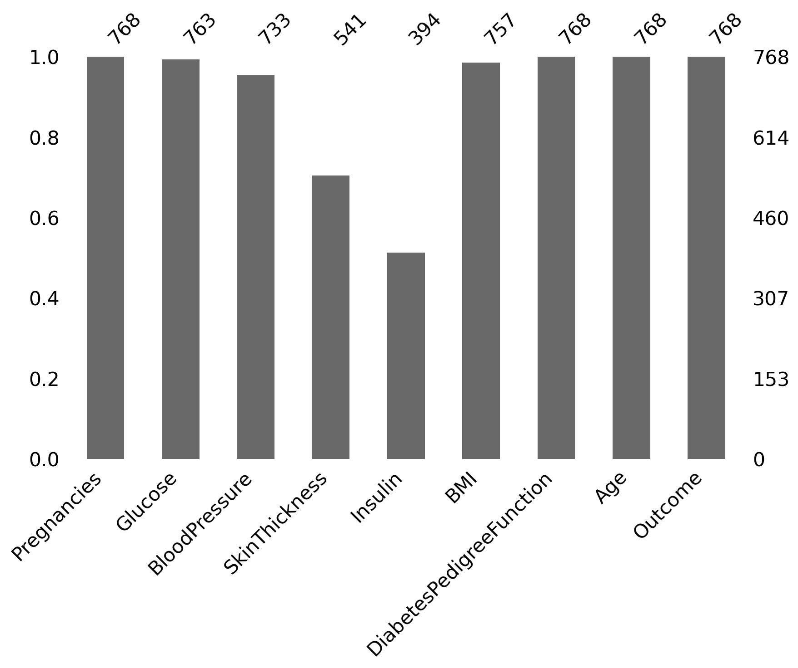
We will fill in each missing value with its median value.
def median_target(dataf, var):
temp = dataf[dataf[var].notnull()]
temp = temp[[var, 'Outcome']].groupby(['Outcome'])[[var]].median().reset_index()
return tempcolumns = ['Pregnancies', 'Glucose', 'BloodPressure', 'SkinThickness', 'Insulin',
'BMI', 'DiabetesPedigreeFunction', 'Age']
for i in columns:
train.loc[(train['Outcome'] == 0 ) & (train[i].isnull()), i] = median_target(train,i)[i][0]
train.loc[(train['Outcome'] == 1 ) & (train[i].isnull()), i] = median_target(train,i)[i][1]
test.loc[(test['Outcome'] == 0 ) & (test[i].isnull()), i] = median_target(train,i)[i][0]
test.loc[(test['Outcome'] == 1 ) & (test[i].isnull()), i] = median_target(train,i)[i][1]After filling if we examine null values in dataset, we will see there are not any missing values.
print("TRAIN DATA")
print(train.isnull().sum(), "\n")
print("TEST DATA")
print(test.isnull().sum())TRAIN DATA
Pregnancies 0
Glucose 0
BloodPressure 0
SkinThickness 0
Insulin 0
BMI 0
DiabetesPedigreeFunction 0
Age 0
Outcome 0
dtype: int64
TEST DATA
Pregnancies 0
Glucose 0
BloodPressure 0
SkinThickness 0
Insulin 0
BMI 0
DiabetesPedigreeFunction 0
Age 0
Outcome 0
dtype: int64Plotting Roc Curve
ROC curves are frequently used to show in a graphical way the connection/trade-off between clinical sensitivity and specificity for every possible cut-off for a test or a combination of tests. In addition the area under the ROC curve gives an idea about the benefit of using the test(s) in question.
def plot_roc_curve(fpr, tpr, label=None):
plt.plot(fpr, tpr, linewidth=2, label=label)
plt.plot([0,1],[0,1],"k--")
plt.axis([0,1,0,1])
plt.xlabel("False Positive Rate")
plt.ylabel("True Positive Rate")Machine Learning
We will use 6 different machine learning algorithm for this model and examine ROC score, accuracy test and train score, best parameters and ROC curve
X_train = train.iloc[:,:8]
y_train = train.iloc[:,-1:]
X_test = test.iloc[:,:8]
y_test = test.iloc[:,-1:]def ml_model(model, parameters):
cv = RepeatedStratifiedKFold(n_splits=10, n_repeats=10, random_state=1)
random_search = RandomizedSearchCV(model, parameters, cv=cv, random_state=1, n_jobs=-1, verbose=1)
pipe = make_pipeline(StandardScaler(),random_search)
pipe.fit(X_train, y_train)
y_pred_proba = pipe.predict_proba(X_test)[:,1]
fpr, tpr, thresholds = roc_curve(y_test, y_pred_proba)
print("ROC Score : ",roc_auc_score(y_test, y_pred_proba))
print("F1 score for train: ", f1_score(y_train, pipe.predict(X_train)))
print("F1 score for test: " , f1_score(y_test, pipe.predict(X_test)))
print("Best params:" + str(random_search.best_params_))
plot_roc_curve(fpr, tpr)
log_reg_params = {"C" : [1,2,3,0.01,0.001, 2.5, 1.5],
"max_iter" : range(100,800,100)}
knn_params = {"n_neighbors" : np.arange(1,50),
"leaf_size" : np.arange(1,50)}
decTree_params = {"max_depth" : [5,10,15,20,25,30],
"min_samples_split" : np.arange(2,50),
"min_samples_leaf" : np.arange(1,50)}
randomForest_params = {"n_estimators" : [100,500, 1000],
"min_samples_split" : np.arange(2,30),
"min_samples_leaf" : np.arange(1,50),
"max_features" : np.arange(1,7)}
lgbm_params = {"n_estimators" : [100,500,1000],
"subsample" : [0.6,0.8,1.0],
"max_depth" : [5,10,15,20,25,30],
"learning_rate" : [0.1, 0.01, 0.02, 0.5],
"min_child_samples" : np.arange(2,30)}
sgd_params = {"alpha" : [0.0001, 0.1, 0.001, 0.01],
"max_iter" : [100,500,1000,2000],
"loss" : ["log","modified_huber","perceptron"]}ml_model(LogisticRegression(), log_reg_params)Fitting 100 folds for each of 10 candidates, totalling 1000 fits
ROC Score : 0.8506791171477079
F1 score for train: 0.6523076923076924
F1 score for test: 0.5573770491803278
Best params:{'max_iter': 700, 'C': 0.01}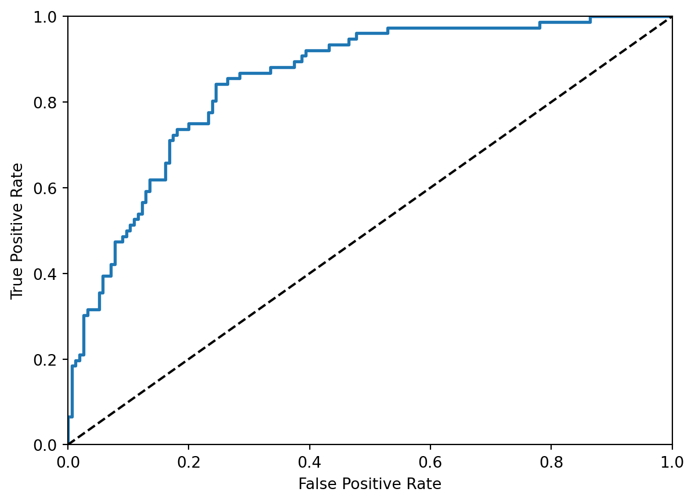
ml_model(KNeighborsClassifier(), knn_params)Fitting 100 folds for each of 10 candidates, totalling 1000 fits
ROC Score : 0.8732173174872666
F1 score for train: 0.7647058823529411
F1 score for test: 0.7007299270072993
Best params:{'n_neighbors': 19, 'leaf_size': 23}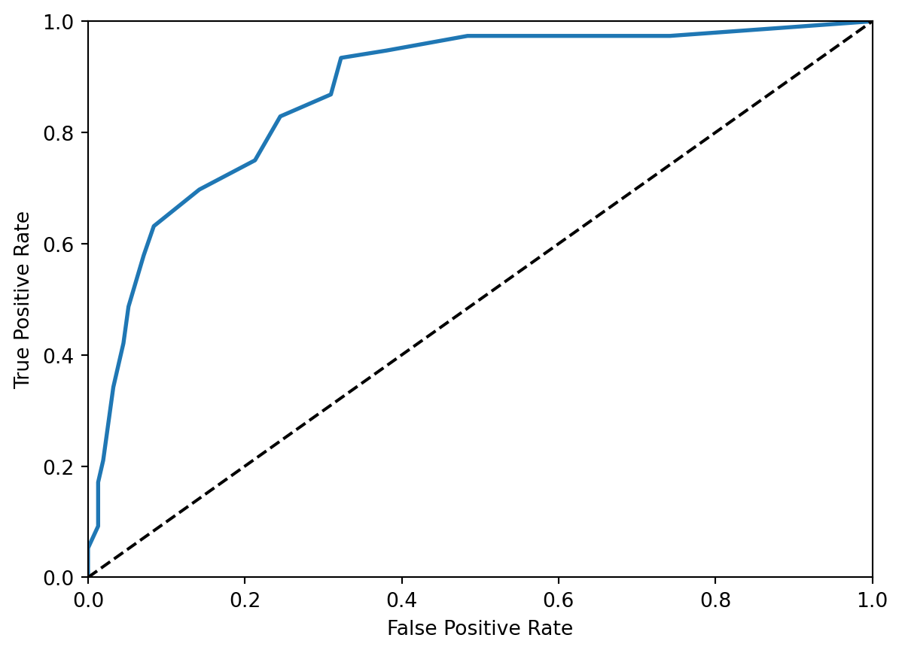
ml_model(DecisionTreeClassifier(), decTree_params)Fitting 100 folds for each of 10 candidates, totalling 1000 fits
ROC Score : 0.9217741935483872
F1 score for train: 0.8385542168674699
F1 score for test: 0.8104575163398693
Best params:{'min_samples_split': 13, 'min_samples_leaf': 33, 'max_depth': 25}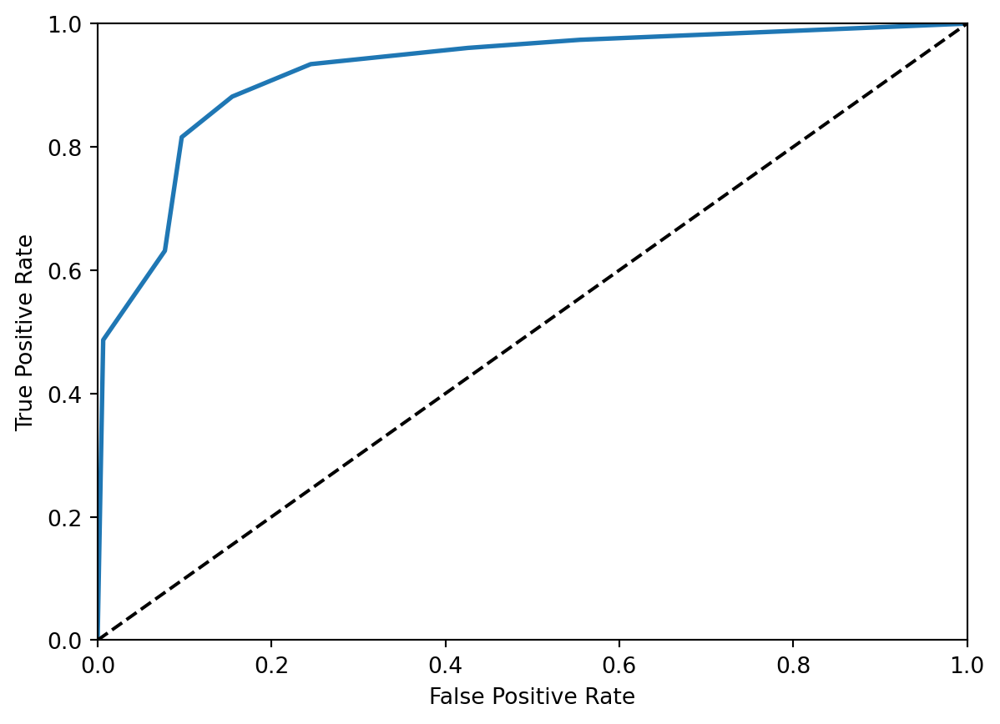
ml_model(RandomForestClassifier(), randomForest_params)Fitting 100 folds for each of 10 candidates, totalling 1000 fits
ROC Score : 0.9337011884550086
F1 score for train: 0.8733850129198966
F1 score for test: 0.7857142857142857
Best params:{'n_estimators': 1000, 'min_samples_split': 24, 'min_samples_leaf': 13, 'max_features': 2}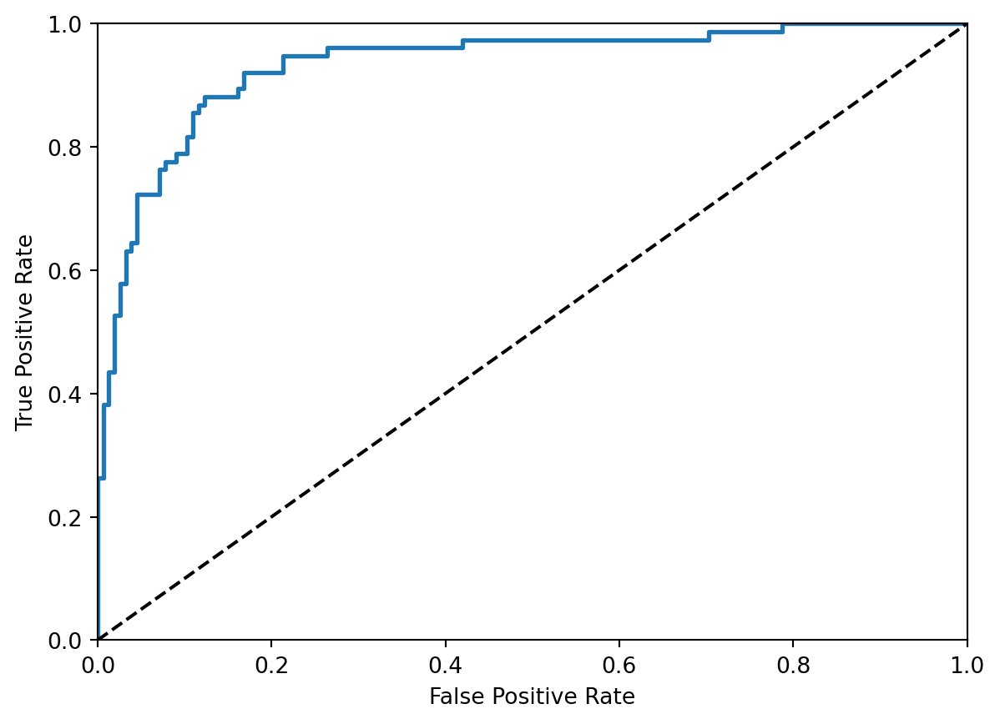
ml_model(LGBMClassifier(), lgbm_params)Fitting 100 folds for each of 10 candidates, totalling 1000 fits
[LightGBM] [Warning] Accuracy may be bad since you didn't explicitly set num_leaves OR 2^max_depth > num_leaves. (num_leaves=31).
[LightGBM] [Warning] Accuracy may be bad since you didn't explicitly set num_leaves OR 2^max_depth > num_leaves. (num_leaves=31).
[LightGBM] [Info] Number of positive: 192, number of negative: 345
[LightGBM] [Info] Auto-choosing col-wise multi-threading, the overhead of testing was 0.000159 seconds.
You can set `force_col_wise=true` to remove the overhead.
[LightGBM] [Info] Total Bins 620
[LightGBM] [Info] Number of data points in the train set: 537, number of used features: 8
[LightGBM] [Info] [binary:BoostFromScore]: pavg=0.357542 -> initscore=-0.586049
[LightGBM] [Info] Start training from score -0.586049
[LightGBM] [Warning] No further splits with positive gain, best gain: -inf
[LightGBM] [Warning] No further splits with positive gain, best gain: -inf
[LightGBM] [Warning] No further splits with positive gain, best gain: -inf
[LightGBM] [Warning] No further splits with positive gain, best gain: -inf
[LightGBM] [Warning] No further splits with positive gain, best gain: -inf
[LightGBM] [Warning] No further splits with positive gain, best gain: -inf
[LightGBM] [Warning] No further splits with positive gain, best gain: -inf
[LightGBM] [Warning] No further splits with positive gain, best gain: -inf
[LightGBM] [Warning] No further splits with positive gain, best gain: -inf
[LightGBM] [Warning] No further splits with positive gain, best gain: -inf
[LightGBM] [Warning] No further splits with positive gain, best gain: -inf
[LightGBM] [Warning] No further splits with positive gain, best gain: -inf
[LightGBM] [Warning] No further splits with positive gain, best gain: -inf
[LightGBM] [Warning] No further splits with positive gain, best gain: -inf
[LightGBM] [Warning] No further splits with positive gain, best gain: -inf
[LightGBM] [Warning] No further splits with positive gain, best gain: -inf
[LightGBM] [Warning] No further splits with positive gain, best gain: -inf
[LightGBM] [Warning] No further splits with positive gain, best gain: -inf
[LightGBM] [Warning] No further splits with positive gain, best gain: -inf
[LightGBM] [Warning] No further splits with positive gain, best gain: -inf
[LightGBM] [Warning] No further splits with positive gain, best gain: -inf
[LightGBM] [Warning] No further splits with positive gain, best gain: -inf
[LightGBM] [Warning] No further splits with positive gain, best gain: -inf
[LightGBM] [Warning] No further splits with positive gain, best gain: -inf
[LightGBM] [Warning] No further splits with positive gain, best gain: -inf
[LightGBM] [Warning] No further splits with positive gain, best gain: -inf
[LightGBM] [Warning] No further splits with positive gain, best gain: -inf
[LightGBM] [Warning] No further splits with positive gain, best gain: -inf
[LightGBM] [Warning] No further splits with positive gain, best gain: -inf
[LightGBM] [Warning] No further splits with positive gain, best gain: -inf
[LightGBM] [Warning] No further splits with positive gain, best gain: -inf
[LightGBM] [Warning] No further splits with positive gain, best gain: -inf
[LightGBM] [Warning] No further splits with positive gain, best gain: -inf
[LightGBM] [Warning] No further splits with positive gain, best gain: -inf
[LightGBM] [Warning] No further splits with positive gain, best gain: -inf
[LightGBM] [Warning] No further splits with positive gain, best gain: -inf
[LightGBM] [Warning] No further splits with positive gain, best gain: -inf
[LightGBM] [Warning] No further splits with positive gain, best gain: -inf
[LightGBM] [Warning] No further splits with positive gain, best gain: -inf
[LightGBM] [Warning] No further splits with positive gain, best gain: -inf
[LightGBM] [Warning] No further splits with positive gain, best gain: -inf
[LightGBM] [Warning] No further splits with positive gain, best gain: -inf
[LightGBM] [Warning] No further splits with positive gain, best gain: -inf
[LightGBM] [Warning] No further splits with positive gain, best gain: -inf
[LightGBM] [Warning] No further splits with positive gain, best gain: -inf
[LightGBM] [Warning] No further splits with positive gain, best gain: -inf
[LightGBM] [Warning] No further splits with positive gain, best gain: -inf
[LightGBM] [Warning] No further splits with positive gain, best gain: -inf
[LightGBM] [Warning] No further splits with positive gain, best gain: -inf
[LightGBM] [Warning] No further splits with positive gain, best gain: -inf
[LightGBM] [Warning] No further splits with positive gain, best gain: -inf
[LightGBM] [Warning] No further splits with positive gain, best gain: -inf
[LightGBM] [Warning] No further splits with positive gain, best gain: -inf
[LightGBM] [Warning] No further splits with positive gain, best gain: -inf
[LightGBM] [Warning] No further splits with positive gain, best gain: -inf
[LightGBM] [Warning] No further splits with positive gain, best gain: -inf
[LightGBM] [Warning] No further splits with positive gain, best gain: -inf
[LightGBM] [Warning] No further splits with positive gain, best gain: -inf
[LightGBM] [Warning] No further splits with positive gain, best gain: -inf
[LightGBM] [Warning] No further splits with positive gain, best gain: -inf
[LightGBM] [Warning] No further splits with positive gain, best gain: -inf
[LightGBM] [Warning] No further splits with positive gain, best gain: -inf
[LightGBM] [Warning] No further splits with positive gain, best gain: -inf
[LightGBM] [Warning] No further splits with positive gain, best gain: -inf
[LightGBM] [Warning] No further splits with positive gain, best gain: -inf
[LightGBM] [Warning] No further splits with positive gain, best gain: -inf
[LightGBM] [Warning] No further splits with positive gain, best gain: -inf
[LightGBM] [Warning] No further splits with positive gain, best gain: -inf
[LightGBM] [Warning] No further splits with positive gain, best gain: -inf
[LightGBM] [Warning] No further splits with positive gain, best gain: -inf
[LightGBM] [Warning] No further splits with positive gain, best gain: -inf
[LightGBM] [Warning] No further splits with positive gain, best gain: -inf
[LightGBM] [Warning] No further splits with positive gain, best gain: -inf
[LightGBM] [Warning] No further splits with positive gain, best gain: -inf
[LightGBM] [Warning] No further splits with positive gain, best gain: -inf
[LightGBM] [Warning] No further splits with positive gain, best gain: -inf
[LightGBM] [Warning] No further splits with positive gain, best gain: -inf
[LightGBM] [Warning] No further splits with positive gain, best gain: -inf
[LightGBM] [Warning] No further splits with positive gain, best gain: -inf
[LightGBM] [Warning] No further splits with positive gain, best gain: -inf
[LightGBM] [Warning] No further splits with positive gain, best gain: -inf
[LightGBM] [Warning] No further splits with positive gain, best gain: -inf
[LightGBM] [Warning] No further splits with positive gain, best gain: -inf
[LightGBM] [Warning] No further splits with positive gain, best gain: -inf
[LightGBM] [Warning] No further splits with positive gain, best gain: -inf
[LightGBM] [Warning] No further splits with positive gain, best gain: -inf
[LightGBM] [Warning] No further splits with positive gain, best gain: -inf
[LightGBM] [Warning] No further splits with positive gain, best gain: -inf
[LightGBM] [Warning] No further splits with positive gain, best gain: -inf
[LightGBM] [Warning] No further splits with positive gain, best gain: -inf
[LightGBM] [Warning] No further splits with positive gain, best gain: -inf
[LightGBM] [Warning] No further splits with positive gain, best gain: -inf
[LightGBM] [Warning] No further splits with positive gain, best gain: -inf
[LightGBM] [Warning] No further splits with positive gain, best gain: -inf
[LightGBM] [Warning] No further splits with positive gain, best gain: -inf
[LightGBM] [Warning] No further splits with positive gain, best gain: -inf
[LightGBM] [Warning] No further splits with positive gain, best gain: -inf
[LightGBM] [Warning] No further splits with positive gain, best gain: -inf
[LightGBM] [Warning] No further splits with positive gain, best gain: -inf
[LightGBM] [Warning] No further splits with positive gain, best gain: -inf
[LightGBM] [Warning] Accuracy may be bad since you didn't explicitly set num_leaves OR 2^max_depth > num_leaves. (num_leaves=31).
ROC Score : 0.9449066213921902
[LightGBM] [Warning] Accuracy may be bad since you didn't explicitly set num_leaves OR 2^max_depth > num_leaves. (num_leaves=31).
F1 score for train: 0.907103825136612
[LightGBM] [Warning] Accuracy may be bad since you didn't explicitly set num_leaves OR 2^max_depth > num_leaves. (num_leaves=31).
F1 score for test: 0.7851851851851851
Best params:{'subsample': 1.0, 'n_estimators': 100, 'min_child_samples': 24, 'max_depth': 20, 'learning_rate': 0.02}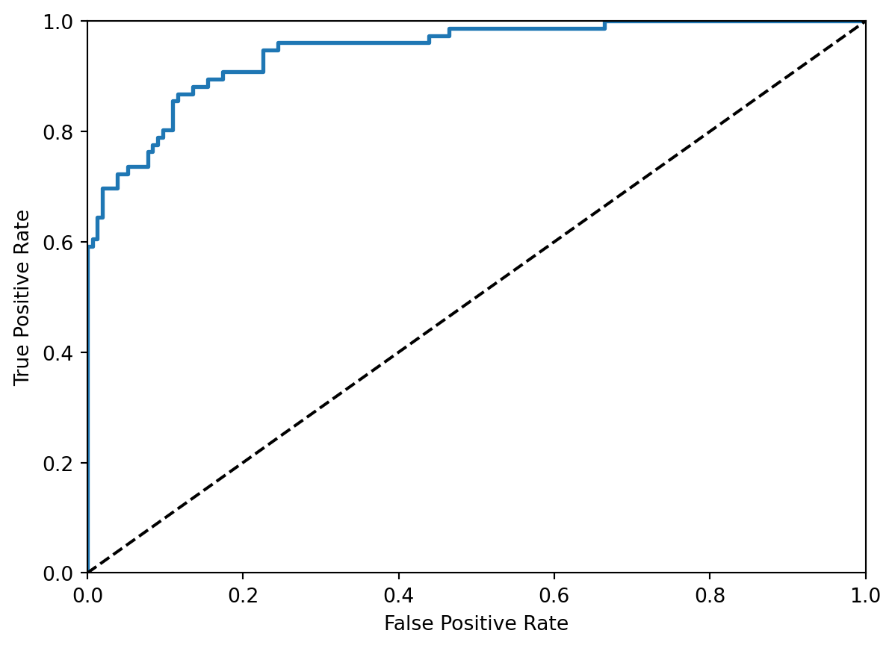
ml_model(SGDClassifier(), sgd_params)Fitting 100 folds for each of 10 candidates, totalling 1000 fits
ROC Score : 0.775
F1 score for train: 0.5993690851735015
F1 score for test: 0.5210084033613445
Best params:{'max_iter': 2000, 'loss': 'modified_huber', 'alpha': 0.001}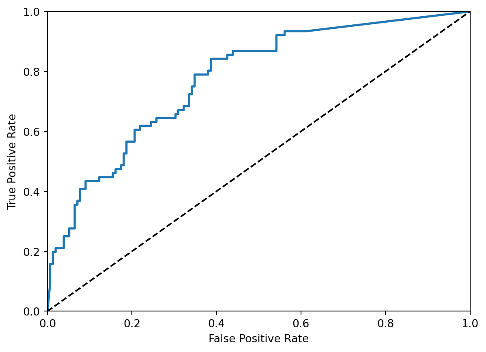